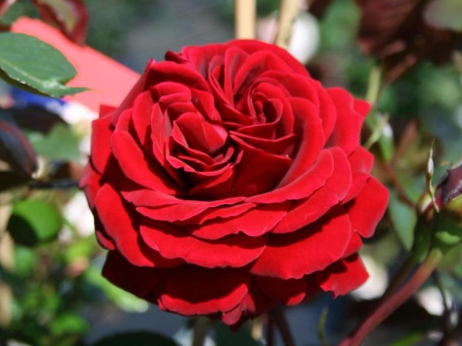
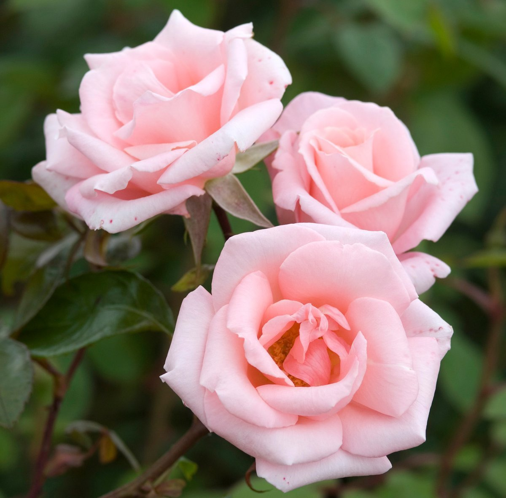

Beautiful Roses
Roses are one of the most beautiful and popular flowers in the world. They come in a variety of colors and have a sweet fragrance that is loved by many. Whether you are looking to plant roses in your garden or give them as a gift, there are many different types of roses to choose from.
Some of the most popular types of roses include hybrid tea roses, floribunda roses, and grandiflora roses. Each of these types of roses has its own unique characteristics and growing requirements, so it is important to do your research before choosing the right rose for your needs.
In addition to their beauty, roses also have many different meanings and symbolisms. For example, red roses are often associated with love and romance, while yellow roses are associated with friendship and joy. White roses, on the other hand, are often used to symbolize purity and innocence.
Overall, roses are a beautiful and versatile flower that can be used in a variety of settings. Whether you are looking to add them to your garden or give them as a gift, they are sure to bring joy and happiness to anyone who receives them.